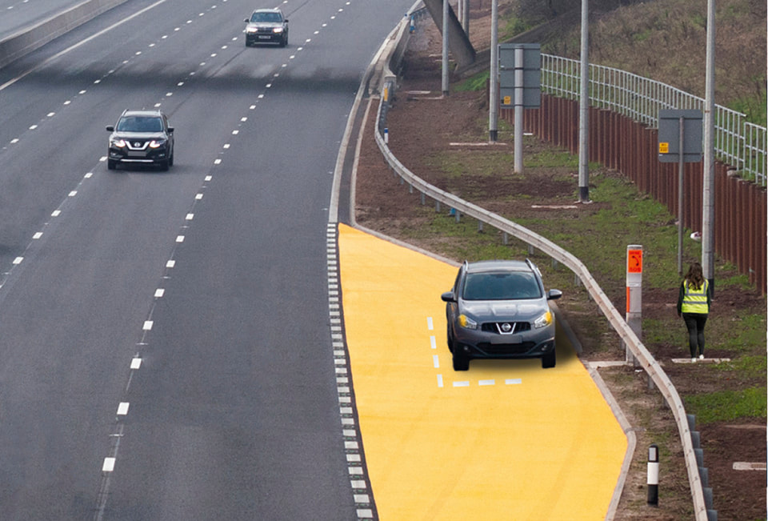
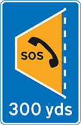

Motorways (253 to 273)
7. Stopping (270 to 271)
270
Emergency areas are located along motorways with no hard shoulder or where the hard shoulder can be used as an extra lane (see Rule 269) and MUST only be used in an emergency.
They are marked by blue signs with an orange SOS telephone symbol and may have orange surfacing.
Emergency areas are located along motorways with no hard shoulder or where the hard shoulder can be used as an extra lane (see Rule 269) and MUST only be used in an emergency.
They are marked by blue signs with an orange SOS telephone symbol and may have orange surfacing.

Rule 270: emergency area

Rule 270: sign indicating distance to next emergency area
Follow the requirements and advice in
- Rule 277 if your vehicle develops a problem on the motorway
- Rule 278 to rejoin the carriageway from an emergency area.
Laws MT(E&W)R regs 5A, 7, 9, 10 & 16,MT(S)R regs 6(1), 8, 9 & 14, PRA 2002 sect 41 & sched 5(8), & RTA 1988 sects 35 & 163 as amended by TMA 2004, sect 6
271
You MUST NOT stop on any carriageway, emergency area, hard shoulder, slip road, central reservation or verge except in an emergency, or when told to do so by the police, traffic officers, an emergency sign or by red flashing light signals.
Do not stop on any part of a motorway to make or receive mobile telephone calls, except in an emergency.
272
You MUST NOT pick up or set down anyone, or walk on a motorway, except in an emergency.
Laws RTRA sect 17 & MT(E&W)R reg 15
271
You MUST NOT stop on any carriageway, emergency area, hard shoulder, slip road, central reservation or verge except in an emergency, or when told to do so by the police, traffic officers, an emergency sign or by red flashing light signals.
Do not stop on any part of a motorway to make or receive mobile telephone calls, except in an emergency.
272
You MUST NOT pick up or set down anyone, or walk on a motorway, except in an emergency.
Laws RTRA sect 17 & MT(E&W)R reg 15